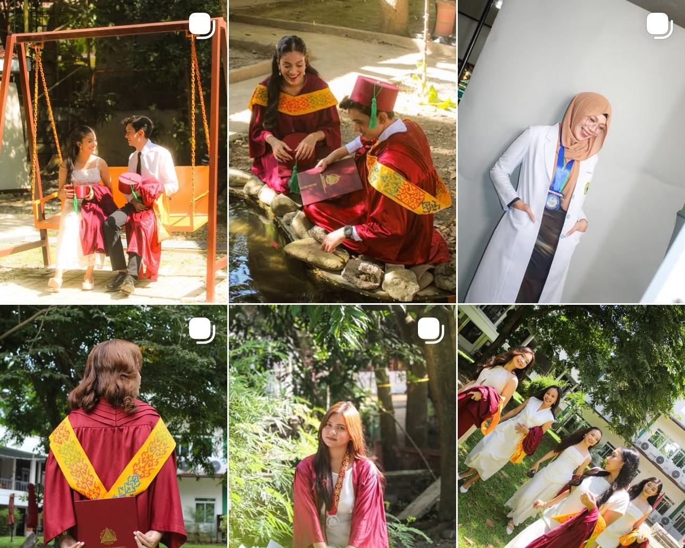
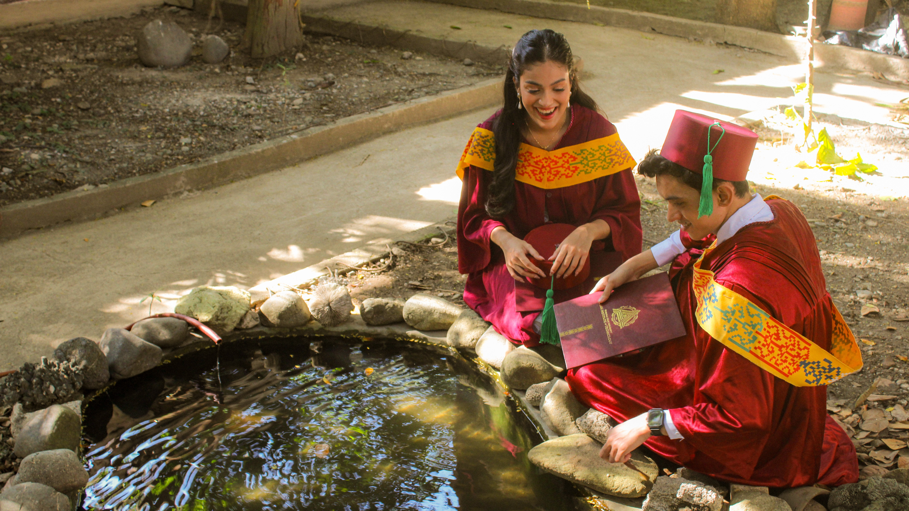
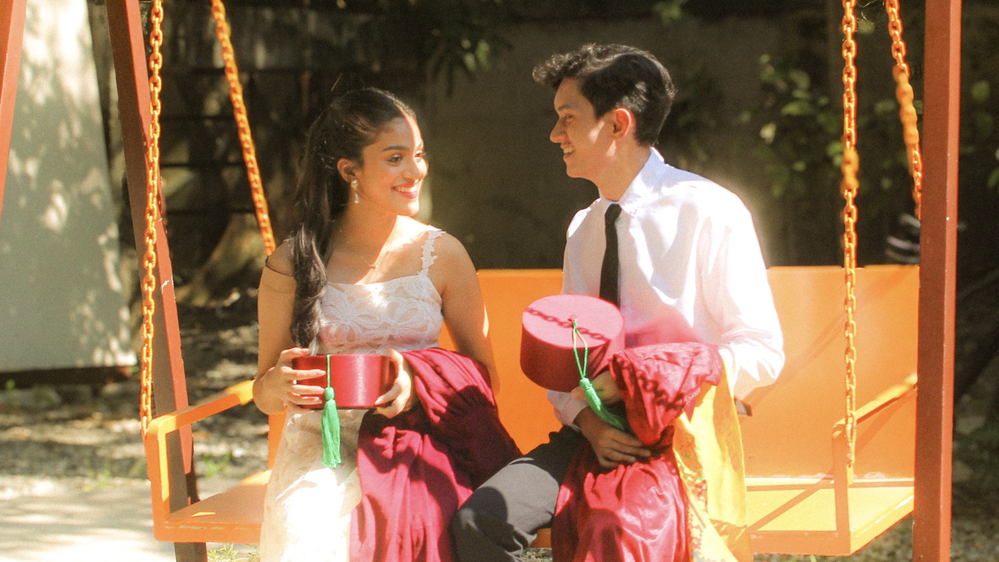

01 / WONDERLIGHT
through my camera roll 📸
Photography is one of the ways I love documenting people and little moments. I take graduation freestyle photoshoots, portraits, and other creative shoots. @by__wonderlight on IG :)

